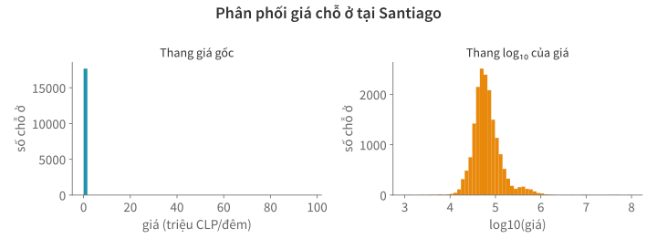

Học kì 1, năm học 2026–2027
Viện Trí tuệ nhân tạo, Trường ĐH Công nghệ, ĐHQGHN
Phát hiện vấn đề, chọn cách xử lý và kiểm tra kết quả.
Trước bài thi giữa kỳ, bạn đã học cách đọc dữ liệu, tính toán với bảng, xử lý chuỗi và ngày giờ.
Code chạy được vẫn có thể cho kết quả sai nếu dữ liệu thiếu, giá trị bất thường hoặc bản ghi trùng chưa được xử lý phù hợp.
Chọn cách xử lý theo ý nghĩa của cột và câu hỏi phân tích.
Santiago, mốc chụp 29/06/2026: 18.534 chỗ ở.
Giá tính bằng CLP/đêm.
COT = ["id", "room_type", "price", "bedrooms", "accommodates",
"minimum_nights", "review_scores_rating",
"number_of_reviews"]
df = pd.read_csv("listings.csv.gz", usecols=COT)
gia_chu = df["price"].str.replace("$", "", regex=False)
gia_chu = gia_chu.str.replace(",", "", regex=False)
df["price_num"] = pd.to_numeric(gia_chu, errors="coerce")
loi_chuyen = df["price"].notna() & df["price_num"].isna()
assert not loi_chuyen.any(), "Cần xem các giá không chuyển được."
print("Kích thước bảng:", df.shape)Kích thước bảng: (18534, 9)Giữ cột price gốc để đối chiếu. Cách đổi giá dạng chuỗi đã học ở Bài 7.
cot = ["price_num", "bedrooms", "review_scores_rating"]
thieu = df[cot].isna()
print((thieu.mean() * 100).round(1).to_string())price_num 4.6
bedrooms 12.6
review_scores_rating 17.8isna() nhận diện giá trị thiếu (NaN, pd.NA, None).
Trung bình của cột boolean là tỷ lệ True.
Trước khi quyết định bỏ hay điền, cần xem những hàng nào thiếu.
print(pd.crosstab(
df["number_of_reviews"].eq(0),
df["review_scores_rating"].isna(),
rownames=["chua_co_danh_gia"], colnames=["thieu_diem"],
))thieu_diem False True
chua_co_danh_gia
False 15243 0
True 0 3291crosstab đếm số hàng theo từng cặp giá trị của hai cột.
Cả 3.291 chỗ ở thiếu điểm đều chưa có đánh giá nào.
Điền 0 sẽ biến “chưa được đánh giá” thành một điểm số.
Ví dụ: tính giá trung bình của các chỗ ở đã có giá.
co_gia = df.dropna(subset=["price_num"])
print("Số chỗ ở:", len(co_gia))
print("Giá trung bình:", round(co_gia["price_num"].mean()))Số chỗ ở: 17688
Giá trung bình: 118200subset chỉ định cột cần kiểm tra. Bỏ subset thì dropna() mặc định
bỏ hàng có ô thiếu ở bất kỳ cột nào.
Bảng bang ghi giá của cùng ba chỗ ở qua hai kỳ (giả lập, USD/đêm); P3 thiếu giá kỳ T6.
bang = pd.DataFrame({
"T5": [100, 200, 300],
"T6": [110, 220, np.nan],
}, index=["P1", "P2", "P3"])
print(bang.mean())T5 200.0
T6 165.0
dtype: float64Trung bình giảm từ 200 xuống 165.
So sánh lại giá trung bình, chỉ dùng những chỗ ở có giá ở cả hai kỳ.
Ví dụ giả lập: ghi rõ “Chưa rõ” ở chỗ ở chưa biết loại phòng.
loai_phong = pd.Series(
["Phòng riêng", None, "Nguyên căn", "Phòng riêng"],
index=["P1", "P2", "P3", "P4"],
)
print(loai_phong.fillna("Chưa rõ"))P1 Phòng riêng
P2 Chưa rõ
P3 Nguyên căn
P4 Phòng riêng
dtype: strfillna chỉ thay ô thiếu. “Chưa rõ” là nhãn quy ước, chưa phải loại phòng được xác định.
Với cột số, chỉ điền 0 khi có căn cứ rằng ô thiếu có nghĩa là không phát sinh.
Giá trị xuất hiện nhiều nhất gọi là mốt (mode).
pho_bien = loai_phong.mode()
print(pho_bien)0 Phòng riêng
dtype: strloai_uoc_luong = loai_phong.fillna(pho_bien.iloc[0])
print("P2:", loai_uoc_luong.loc["P2"])P2: Phòng riêngmode() bỏ qua NA và trả về một Series. Ở đây có một mốt, lấy bằng iloc[0].
P2 được ước lượng là phòng riêng. Cách này làm tăng tỷ lệ của loại phòng vốn phổ biến nhất.
Giá giả lập của sáu chỗ ở (USD/đêm):
mau_gia = pd.Series([80, 90, 100, 110, 620, np.nan])
dien_gia = pd.DataFrame({
"goc": mau_gia,
"dien_tb": mau_gia.fillna(mau_gia.mean()),
"dien_tv": mau_gia.fillna(mau_gia.median()),
})
print(dien_gia.loc[mau_gia.isna()]) goc dien_tb dien_tv
5 NaN 200.0 100.0Giá 620 kéo trung bình lên 200; trung vị là 100. Trung vị ít bị ảnh hưởng bởi giá trị cực đoan.
Cả hai cách đều giả định các giá đã biết có thể dùng để ước lượng giá còn thiếu.
Một lựa chọn là dùng trung vị số phòng ngủ đã biết để điền ô thiếu.
trung_vi = df["bedrooms"].median()
df["bedrooms_fill"] = df["bedrooms"].fillna(trung_vi)
print("Giá trị dùng để điền:", trung_vi)
print(df[["bedrooms", "bedrooms_fill"]].mean().round(2))Giá trị dùng để điền: 1.0
bedrooms 1.49
bedrooms_fill 1.43
dtype: float64fillna chỉ thay ô thiếu. Giá trị điền là ước lượng, nên giữ cột gốc để đối chiếu.
Số phòng ngủ và sức chứa của các chỗ ở (giả lập):
mau_phong = pd.DataFrame({
"suc_chua": [2, 2, 4, 4, 6, 6],
"phong_ngu": [1, np.nan, 2, np.nan, np.nan, np.nan],
})
tv_nhom = (mau_phong.groupby("suc_chua")["phong_ngu"]
.transform("median"))
mau_phong["dien"] = mau_phong["phong_ngu"].fillna(tv_nhom)
print(mau_phong) suc_chua phong_ngu dien
0 2 1.0 1.0
1 2 NaN 1.0
2 4 2.0 2.0
3 4 NaN 2.0
4 6 NaN NaN
5 6 NaN NaNtransform trả trung vị của nhóm về từng hàng. Nhóm sức chứa 6 toàn NA nên vẫn chưa điền được.
Áp dụng cách điền theo nhóm với dữ liệu Santiago:
uoc_luong = (df.groupby("accommodates")["bedrooms"]
.transform("median"))
df["bedrooms_group"] = df["bedrooms"].fillna(uoc_luong)
print("Còn thiếu:", df["bedrooms_group"].isna().sum())
cot_so = ["bedrooms", "bedrooms_fill", "bedrooms_group"]
print(df[cot_so].mean().round(2))Còn thiếu: 0
bedrooms 1.49
bedrooms_fill 1.43
bedrooms_group 1.44
dtype: float64Mọi nhóm sức chứa đều có số phòng ngủ đã biết nên không còn ô thiếu. Cách này giả định chỗ ở cùng sức chứa có số phòng ngủ gần nhau.
Giá theo tháng của một chỗ ở (giả lập, USD/đêm):
gia_theo_thang = pd.Series([np.nan, 100, np.nan, 160, np.nan],
index=["T1", "T2", "T3", "T4", "T5"])
print(pd.DataFrame({"goc": gia_theo_thang,
"ffill": gia_theo_thang.ffill(),
"bfill": gia_theo_thang.bfill()})) goc ffill bfill
T1 NaN NaN 100.0
T2 100.0 100.0 100.0
T3 NaN 100.0 160.0
T4 160.0 160.0 160.0
T5 NaN 160.0 NaNffill() lấy giá trị đã biết gần nhất phía trước; bfill() lấy phía sau.
Cách điền này giả định giá chưa thay đổi trong đoạn bị thiếu.
Bảng giả lập có hai chỗ ở qua ba kỳ; giá tính bằng USD/đêm.
lich_gia = pd.DataFrame({
"id": ["P1", "P1", "P1", "P2", "P2", "P2"],
"ky": [1, 2, 3, 1, 2, 3],
"gia": [100, np.nan, np.nan, np.nan, 200, np.nan],
}).sort_values(["id", "ky"])
lich_gia["dien"] = lich_gia.groupby("id")["gia"].ffill(limit=1)
print(lich_gia.to_string(index=False))id ky gia dien
P1 1 100.0 100.0
P1 2 NaN 100.0
P1 3 NaN NaN
P2 1 NaN NaN
P2 2 200.0 200.0
P2 3 NaN 200.0groupby("id") tránh lấy giá của chỗ ở khác. limit=1 chỉ điền tối đa một ô trong mỗi đoạn thiếu liên tiếp.
Nhiệt độ đo cùng giờ tại một trạm (giả lập, °C):
| Ngày | Nhiệt độ |
|---|---|
| 01/06 | 20 |
| 02/06 | Thiếu |
| 04/06 | 26 |
Nội suy tuyến tính giả định nhiệt độ thay đổi đều giữa hai ngày đã biết.
Từ 01/06 đến 04/06: tăng 6°C trong 3 ngày. Ước lượng ngày 02/06: 20 + 6 × 1/3 = 22°C.
nhiet_do = pd.Series(
[20, np.nan, 26, np.nan],
index=pd.to_datetime(["2026-06-01", "2026-06-02",
"2026-06-04", "2026-06-05"]),
)
noi_suy = nhiet_do.interpolate(method="time", limit_area="inside")
print(pd.DataFrame({"goc": nhiet_do, "noi_suy": noi_suy})) goc noi_suy
2026-06-01 20.0 20.0
2026-06-02 NaN 22.0
2026-06-04 26.0 26.0
2026-06-05 NaN NaNmethod="time" tính theo khoảng cách thời gian; cần chỉ mục ngày giờ đã sắp xếp.
limit_area="inside" chỉ điền giữa hai giá trị đã biết. Ngày 05/06 không có giá trị phía sau nên giữ NA.
| Cách điền | Căn cứ cần có |
|---|---|
| Giá trị quy ước | Ghi rõ chưa biết, hoặc nguồn quy định giá trị thay thế. |
| Trung bình / trung vị | Các giá trị đã biết có thể đại diện cho ô thiếu. |
| Giá trị phổ biến nhất | Có cơ sở ước lượng bằng nhãn phổ biến. |
| Theo nhóm | Nhóm liên quan đến cột cần điền và có đủ dữ liệu. |
| Giá trị trước / sau | Giá trị ít thay đổi trong đoạn thiếu. |
| Nội suy | Đại lượng có thể biến đổi đều trong đoạn thiếu. |
Nếu chưa có căn cứ để điền, có thể giữ NA và xử lý riêng khi phân tích.
Vẫn dùng giá giả lập [80, 90, 100, 110, 620, NA]:
so_sanh_dien = pd.DataFrame({
"truoc": mau_gia,
"dien_tb": mau_gia.fillna(mau_gia.mean()),
})
print(so_sanh_dien.agg(["count", "mean", "std"]).round(1)) truoc dien_tb
count 5.0 6.0
mean 200.0 200.0
std 235.1 210.2Điền trung bình giữ nguyên trung bình nhưng làm giảm độ lệch chuẩn. Có thêm giá trị chưa có nghĩa là có thêm quan sát thật.
Giữ cột gốc và đánh dấu ô đã điền. Có thể che thử một số giá trị đã biết, rồi so giá trị điền với giá trị thật.
Phát hiện giá trị bất thường, chọn cách xử lý và so tác động.
| Trường hợp | Căn cứ để đánh giá |
|---|---|
| Điểm 6 trên thang từ 0 đến 5 | Ngoài miền giá trị cho phép |
| Yêu cầu ở ít nhất 730 đêm | Rất dài, cần kiểm tra quy định của nguồn |
| Giá cao hơn hầu hết chỗ ở | Có thể là phân khúc khác hoặc lỗi dữ liệu |
Ngoại lai (outlier) là giá trị khác xa phần lớn dữ liệu. Ngoại lai chưa chắc là lỗi.
Với điểm đánh giá, quy tắc đang dùng là 0 ≤ điểm ≤ 5.
diem = pd.Series([4.8, 6.0, np.nan, -1.0])
sai_mien = diem.notna() & ~diem.between(0, 5)
print(pd.DataFrame({"diem": diem, "sai_mien": sai_mien})) diem sai_mien
0 4.8 False
1 6.0 True
2 NaN False
3 -1.0 Truebetween(0, 5) lấy cả hai biên. notna() tách giá trị thiếu khỏi giá trị nằm ngoài miền.
Điểm 6 và −1 nằm ngoài thang 0–5. Nếu chưa biết điểm đúng, có thể chuyển thành giá trị thiếu.
diem_hop_le = diem.mask(sai_mien)
print(pd.DataFrame({"goc": diem, "sau": diem_hop_le})) goc sau
0 4.8 4.8
1 6.0 NaN
2 NaN NaN
3 -1.0 NaNmask(điều_kiện) thay các ô có điều kiện True bằng NA; các ô còn lại giữ nguyên.
Giữ diem và cờ sai_mien để biết ô nào vốn thiếu, ô nào bị loại vì sai miền.
z-score = (giá trị − trung bình) / độ lệch chuẩn. Giá trị có |z| lớn nằm xa trung bình.
Khối lượng các gói hàng (giả lập, gam):
khoi_luong = pd.Series([98, 99, 100, 101, 102] * 4 + [130])
z = (khoi_luong - khoi_luong.mean()) / khoi_luong.std()
print(pd.DataFrame({"gam": khoi_luong, "z": z.round(2)})
.loc[z.abs() > 3]) gam z
20 130 4.27Ngưỡng |z| > 3 thường dùng để sàng lọc dữ liệu gần đối xứng. Với giá có phân phối lệch mạnh, trung bình và độ lệch chuẩn đều bị giá cực đoan kéo lên.

Trên thang log₁₀, 4 ứng với 10.000 CLP; 5 ứng với 100.000 CLP. Thang log giúp nhìn rõ phân phối khi các giá chênh nhau rất nhiều lần.
Q1 và Q3 là phân vị (percentile) 25% và 75%: khoảng 25% giá ≤ Q1, 75% giá ≤ Q3. IQR = Q3 − Q1.
Thường gắn cờ giá dưới Q1 − 1,5 × IQR hoặc trên Q3 + 1,5 × IQR.
gia = df.loc[df["price_num"] > 0, "price_num"]
q1, q3 = gia.quantile([0.25, 0.75])
iqr = q3 - q1
nguong_iqr = q3 + 1.5 * iqr
print("Ngưỡng trên:", round(nguong_iqr, 2))
print("Số giá vượt ngưỡng:", (gia > nguong_iqr).sum())Ngưỡng trên: 164784.38
Số giá vượt ngưỡng: 1499Phòng riêng và nguyên căn có mặt bằng giá khác nhau. Tính IQR trên các giá dương đã biết của từng loại:
theo_loai = df.loc[df["price_num"] > 0].groupby("room_type")
q = theo_loai["price_num"].quantile([0.25, 0.75]).unstack()
nguong_loai = q[0.75] + 1.5 * (q[0.75] - q[0.25])
print(pd.DataFrame({"so_gia": theo_loai["price_num"].count(),
"nguong_clp": nguong_loai.round(0)})) so_gia nguong_clp
room_type
Entire home/apt 14425 173568.0
Hotel room 56 251214.0
Private room 3148 90382.0
Shared room 59 73334.0unstack() đưa hai phân vị thành hai cột 0.25 và 0.75. Nhóm ít quan sát cho ngưỡng kém ổn định hơn.
nguong_tung_hang = df["room_type"].map(nguong_loai)
co_theo_loai = df["price_num"] > nguong_tung_hang
so_co = pd.DataFrame({
"nguong_chung": df["price_num"] > nguong_iqr,
"nguong_theo_loai": co_theo_loai,
}).groupby(df["room_type"]).sum()
print(so_co) nguong_chung nguong_theo_loai
room_type
Entire home/apt 1385 1275
Hotel room 12 5
Private room 101 238
Shared room 1 5map tra ngưỡng theo loại chỗ ở của từng hàng. Bảng trên đếm số giá vượt ngưỡng.
Với phòng riêng, ngưỡng chung bỏ sót nhiều giá cao so với cùng loại. Các hàng bị cờ vẫn cần được kiểm tra.
xem = ["id", "room_type", "price_num", "minimum_nights",
"review_scores_rating"]
print(df.loc[df["price_num"].idxmax(), xem].to_string())id 651018255986860283
room_type Entire home/apt
price_num 97000045.0
minimum_nights 1.0
review_scores_rating 4.71Cần đối chiếu nguồn, đơn vị và loại chỗ ở trước khi sửa giá. Nếu chưa xác minh được, giữ cờ và xem kết quả nhạy thế nào với giá này.
| Đã biết gì? | Có thể xử lý thế nào? |
|---|---|
| Xác minh được giá trị đúng | Sửa theo nguồn và lưu giá trị cũ. |
| Biết là sai, chưa biết giá trị đúng | Chuyển thành NA, giữ cờ lý do. |
| Hiếm gặp nhưng có thể đúng | Giữ lại; so kết quả có và không có nó. |
| Ngoài phạm vi phân tích | Loại khỏi phép tính đó, ghi rõ điều kiện. |
| Cần hạn chế ảnh hưởng của giá cao | Thử chặn ở một ngưỡng, rồi đo tác động. |
Quyết định dựa vào ý nghĩa dữ liệu và mục đích phân tích; ngưỡng thống kê chỉ cung cấp thêm căn cứ.
Giá giả lập (USD/đêm). Thử chặn trên ở 200 để thấy cách clip hoạt động:
gia_vi_du = pd.Series([80, 100, 120, 1000])
gia_chan = gia_vi_du.clip(upper=200)
print(pd.DataFrame({"goc": gia_vi_du, "chan_tren": gia_chan})) goc chan_tren
0 80 80
1 100 100
2 120 120
3 1000 200upper=200 thay giá lớn hơn 200 bằng 200; lower đặt ngưỡng dưới. Số hàng giữ nguyên.
Chặn theo phân vị thường gọi là winsorization. Ngưỡng 200 ở đây chỉ để minh hoạ, không phải quy tắc giá hợp lý.
Ngưỡng IQR chung gắn cờ 8,5% giá, quá nhiều để xem lại từng hàng. Thử với P99 (phân vị 99%):
nguong_p99 = gia.quantile(0.99)
gia_duoi = gia[gia <= nguong_p99]
so_sanh = pd.DataFrame({
"goc": gia,
"bo_tren_p99": gia_duoi,
"chan_p99": gia.clip(upper=nguong_p99),
}).agg(["count", "mean", "median"])
print(so_sanh.round(0)) goc bo_tren_p99 chan_p99
count 17688.0 17511.0 17688.0
mean 118200.0 82298.0 88340.0
median 59000.0 58400.0 59000.0Bỏ hàng làm giảm số giá; chặn giữ đủ số giá nhưng thay các giá cao. Cả hai đều làm giảm trung bình, chưa chứng minh giá gốc là sai.
Một bộ kiểm tra tính lại P99 ở mỗi kỳ, rồi gắn cờ giá lớn hơn P99 của kỳ đó.
Kỳ sau giữ nguyên các chỗ ở, nhưng mọi giá đều tăng gấp đôi.
Dựa vào tỷ lệ bị gắn cờ, bộ kiểm tra này có phát hiện được đợt tăng giá không?
Chọn khoá, tìm mâu thuẫn và giữ bản ghi có căn cứ.
Bảng giả lập lich_su lưu một giá cho mỗi chỗ ở, mỗi kỳ.
| id | ky | gia |
|---|---|---|
| P1 | T5 | 100 |
| P1 | T6 | 120 |
| P1 | T6 | 120 |
| P2 | T5 | 80 |
| P2 | T6 | 90 |
| P2 | T6 | 95 |
Khoá dùng để phân biệt từng bản ghi; ở đây là cặp (id, ky).
Ví dụ giả lập: nguồn quy định mã chỗ ở không phân biệt hoa thường, bỏ khoảng trắng hai đầu.
ma = pd.Series(["P1", " p1 ", "P2", "p2"])
ma_chuan = ma.str.strip().str.upper()
print(pd.DataFrame({"goc": ma, "chuan": ma_chuan,
"trung": ma_chuan.duplicated(keep=False)})) goc chuan trung
0 P1 P1 True
1 p1 P1 True
2 P2 P2 True
3 p2 P2 TrueGiữ mã gốc để đối chiếu. Chỉ chuẩn hoá theo quy ước của nguồn; không tự bỏ số 0 đầu mã hay đổi hoa thường cho mọi loại mã.
khoa = ["id", "ky"]
trung = lich_su.duplicated(subset=khoa, keep=False)
print(lich_su.loc[trung].to_string(index=False))id ky gia
P1 T6 120
P1 T6 120
P2 T6 90
P2 T6 95subset chọn các cột đem so. keep=False đánh dấu mọi hàng thuộc nhóm trùng.
Mặc định keep="first" không đánh dấu hàng xuất hiện đầu tiên.
Các hàng giống nhau ở mọi cột có thể là cùng một bản ghi được nhập lại.
khong_lap = lich_su.drop_duplicates()
con_trung = khong_lap.duplicated(subset=khoa, keep=False)
print(khong_lap.loc[con_trung].to_string(index=False))id ky gia
P2 T6 90
P2 T6 95drop_duplicates() mặc định giữ bản đầu của mỗi nhóm hàng giống nhau.
Hai giá của P2 vẫn khác nhau: cần căn cứ để chọn bản đúng.
Trong bảng lich_su, hai hàng P1/T6 cùng giá; hai hàng P2/T6 ghi giá khác nhau.
so_gia_khac = lich_su.groupby(khoa)["gia"].transform("nunique")
mau_thuan = so_gia_khac > 1
print(lich_su.loc[mau_thuan].to_string(index=False))id ky gia
P2 T6 90
P2 T6 95nunique đếm số giá trị khác nhau, mặc định bỏ NA. transform đưa số đếm về từng hàng của nhóm.
Cần xác minh hoặc có quy tắc chọn nguồn. Lấy trung bình hai giá chưa chắc khôi phục được giá đúng.
Hai bản ghi của cùng chỗ ở, cùng kỳ (giả lập). Các giá trị đã biết không mâu thuẫn:
bo_sung = pd.DataFrame({
"id": ["P1", "P1"], "ky": ["T6", "T6"],
"gia": [120, np.nan], "so_phong": [np.nan, 2],
})
print(bo_sung.groupby(khoa)[["gia", "so_phong"]].first()) gia so_phong
id ky
P1 T6 120.0 2.0first() lấy giá trị đầu tiên không thiếu ở từng cột. Kết quả có thể ghép từ nhiều hàng.
Mỗi hàng của bảng lich_cap_nhat là một lần cập nhật giá (giả lập).
Cột cap_nhat có kiểu ngày giờ, năm 2026.
| id | ky | cap_nhat | gia |
|---|---|---|---|
| P1 | T6 | 29/06 10:00 | 120 |
| P2 | T6 | 29/06 08:00 | 90 |
| P1 | T5 | 31/05 07:00 | 100 |
| P1 | T6 | 29/06 09:00 | 110 |
Với mỗi cặp (id, ky), chọn giá cập nhật sau cùng, bất kể thứ tự hàng trong bảng.
Giả sử P1/T6 có hai giá khác nhau nhưng cùng thời điểm cập nhật (giả lập):
cung_gio = pd.DataFrame({
"id": ["P1", "P1"], "ky": ["T6", "T6"],
"cap_nhat": pd.to_datetime(["2026-06-29 10:00"] * 2),
"gia": [120, 125],
})
print(cung_gio.duplicated(khoa + ["cap_nhat"], keep=False))0 True
1 True
dtype: boolChọn theo thời điểm cập nhật như Bài tập 3 vẫn chưa có căn cứ chọn giá 120 hay 125. Cần thêm nguồn ưu tiên, phiên bản hoặc xác minh lại.
Ví dụ giả lập: bảng tra vùng ghi hai hàng cho khu A.
cho_o = pd.DataFrame({"id": ["P1", "P2"], "khu": ["A", "B"]})
vung = pd.DataFrame({"khu": ["A", "A", "B"],
"vung": ["Bắc", "Nam", "Nam"]})
print(cho_o.merge(vung, on="khu", how="left")) id khu vung
0 P1 A Bắc
1 P1 A Nam
2 P2 B NamP1 khớp hai hàng nên xuất hiện hai lần. Nếu mỗi khu chỉ được có một vùng, thêm validate="many_to_one" để kiểm khoá bên phải là duy nhất.
Sửa bảng tra cứu trước khi ghép lại. Xoá một hàng ở kết quả có thể giữ nhầm vùng.
Đảm bảo chất lượng dữ liệu (quality assurance, QA): kiểm cấu trúc, quan hệ giữa dữ liệu và kết quả sau xử lý.
Trước khi so giá với ngưỡng, bảng phải đủ cột và các cột dùng để tính phải là số.
def kiem_cau_truc(d):
can = {"id", "price_num", "minimum_nights"}
thieu = can - set(d.columns)
if thieu:
raise ValueError(f"Thiếu cột: {sorted(thieu)}")
for cot in ["price_num", "minimum_nights"]:
if not pd.api.types.is_numeric_dtype(d[cot]):
raise TypeError(f"Cột {cot} phải có kiểu số")
kiem_cau_truc(df)is_numeric_dtype kiểm kiểu số. Thiếu cột hoặc sai kiểu thì dừng với thông báo; không bỏ qua phép kiểm rồi báo 0 lỗi.
Quy định đặt phòng giả lập: số đêm tối thiểu ≤ số đêm tối đa.
quy_dinh = pd.DataFrame({"toi_thieu": [1, 3, 7, np.nan],
"toi_da": [7, 2, 7, 30]})
du = quy_dinh.notna().all(axis=1)
sai_thu_tu = du & (quy_dinh["toi_thieu"] > quy_dinh["toi_da"])
print(quy_dinh.assign(thieu=~du, sai_thu_tu=sai_thu_tu)) toi_thieu toi_da thieu sai_thu_tu
0 1.0 7 False False
1 3.0 2 False True
2 7.0 7 False False
3 NaN 30 True FalseMỗi cột đều có thể chứa số hợp lệ, nhưng cặp 3 và 2 mâu thuẫn. Hàng thiếu số đêm được gắn cờ riêng vì chưa đủ dữ liệu để so.
Mã chỗ ở của mỗi đánh giá phải có trong bảng chỗ ở. Ví dụ giả lập, hai bảng cùng phạm vi:
ma_cho_o = pd.Series(["P1", "P2"])
ma_danh_gia = pd.Series(["P1", "P9", None],
index=["R1", "R2", "R3"])
co_ma = pd.DataFrame({
"thieu_ma": ma_danh_gia.isna(),
"khong_khop": ma_danh_gia.notna() &
~ma_danh_gia.isin(ma_cho_o),
})
print(co_ma) thieu_ma khong_khop
R1 False False
R2 False True
R3 True Falseisin kiểm mã thuộc danh sách cho phép. R2 có mã P9 không tìm thấy; R3 thiếu mã nên được tách riêng.
Tại cùng mốc chụp, bảng chỗ ở ghi số đánh giá; bảng đánh giá cho phép đếm lại (giả lập):
so_nguon = pd.Series([2, 1, 0], index=["P1", "P2", "P3"])
ma_rv = pd.Series(["P1", "P1", "P2", "P2"])
dem_lai = ma_rv.value_counts().reindex(so_nguon.index,
fill_value=0)
print(pd.DataFrame({"nguon": so_nguon, "dem_lai": dem_lai,
"lech": dem_lai - so_nguon})) nguon dem_lai lech
P1 2 2 0
P2 1 2 1
P3 0 0 0reindex(..., fill_value=0) giữ cả P3 không có đánh giá. P2 lệch 1: cần kiểm thời điểm chụp, phạm vi và cách đếm ở nguồn.
Gom các quy tắc cho bảng chỗ ở Santiago. Mỗi quy tắc ghi rõ căn cứ và cách xử lý.
| Quy tắc | Căn cứ | Cách xử lý |
|---|---|---|
| Thiếu giá | Không tính được giá | Bỏ khỏi phép tính giá |
| Giá trên P99 tham chiếu | Giá cao bất thường | Xem hàng bị cờ, so tác động |
| Thiếu số đêm tối thiểu | Không kiểm được quy định | Đếm riêng, xem nguồn |
| Số đêm tối thiểu > 365 | Ít khi thuê hơn một năm | Xem quy định của nguồn |
| Trùng id (một mốc chụp) | Mỗi chỗ ở một bản ghi | Xem cả nhóm trùng |
| Muốn kiểm tra | Cách dùng ngưỡng |
|---|---|
| Giá nào cao trong từng kỳ? | Tính P99 riêng trong kỳ đó |
| Giá có vượt mức tham chiếu cũ? | Giữ P99 của kỳ tham chiếu |
Khi so qua các kỳ, ghi lại nguồn ngưỡng, đơn vị và mốc chụp. Thay thành phố hoặc tiền tệ thì phải xem lại ngưỡng.
def kiem_tra(d, nguong_gia):
return pd.DataFrame({
"gia_thieu": d["price_num"].isna(),
"gia_cao": d["price_num"] > nguong_gia,
"dem_thieu": d["minimum_nights"].isna(),
"dem_tren_365": d["minimum_nights"] > 365,
"id_trung": d["id"].duplicated(keep=False),
})Mỗi cột là một quy tắc, mỗi hàng ứng với một hàng của d.
Hàm trả bảng boolean, không sửa dữ liệu đầu vào.
NaN > 365 cho False, nên số đêm thiếu cần cờ riêng dem_thieu.
co = kiem_tra(df, nguong_gia=nguong_p99)
bao_cao = pd.DataFrame({
"so_hang": co.sum(),
"ty_le_pct": (co.mean() * 100).round(2),
})
print(bao_cao) so_hang ty_le_pct
gia_thieu 846 4.56
gia_cao 177 0.96
dem_thieu 6 0.03
dem_tren_365 1 0.01
id_trung 0 0.00Tỷ lệ ở đây chia cho toàn bộ 18.534 hàng. id_trung bằng 0 chưa cho biết quy tắc có bắt được id trùng hay không.
Bảng cờ co_mau giả lập:
| Mã | gia_cao | dem_tren_365 |
|---|---|---|
| P1 | True | True |
| P2 | True | False |
| P3 | False | False |
3 lượt gắn cờ, 2 hàng cần xem.
print(co_mau.any(axis=1).sum())2any(axis=1) đánh dấu hàng có ít nhất một cờ True.
can_xem = co.any(axis=1)
cot_goc = ["id", "price_num", "minimum_nights"]
chi_tiet = df.loc[can_xem, cot_goc].join(co.add_prefix("co_"))
print(chi_tiet.loc[chi_tiet["co_dem_tren_365"],
["id", "minimum_nights", "co_dem_tren_365"]]
.to_string(index=False)) id minimum_nights co_dem_tren_365
1508228918689174980 730.0 Truejoin ghép cờ theo chỉ mục hàng; add_prefix thêm co_ vào tên cột để phân biệt với dữ liệu gốc.
Báo cáo tổng cho biết có bao nhiêu vấn đề. Bảng chi tiết giữ mã, giá trị gốc và lý do để kiểm tra từng hàng.
thu = pd.DataFrame({
"id": ["P1", "P2", "P2", "P3"],
"price_num": [np.nan, 100, 101, 50],
"minimum_nights": [1, 365, 366, np.nan],
})
ket_qua = kiem_tra(thu, nguong_gia=100)
print(ket_qua) gia_thieu gia_cao dem_thieu dem_tren_365 id_trung
0 True False False False False
1 False False False False True
2 False True False True True
3 False False True False FalseThử cả giá trị thiếu, giá trị đúng bằng ngưỡng, vượt ngưỡng và khoá trùng.
Quay lại ví dụ điểm đánh giá ở slide «Đánh dấu giá trị sai trước khi thay».
truoc_sau = pd.DataFrame({"truoc": diem, "sau": diem_hop_le})
ngoai_mien = truoc_sau.notna() & (
(truoc_sau < 0) | (truoc_sau > 5))
print(pd.DataFrame({"ngoai_mien": ngoai_mien.sum(),
"thieu": truoc_sau.isna().sum()}))
assert diem_hop_le[~sai_mien].equals(diem[~sai_mien]) ngoai_mien thieu
truoc 2 1
sau 0 3Số điểm sai miền giảm, nhưng số ô thiếu tăng. assert kiểm các ô ngoài phạm vi sửa vẫn giữ nguyên.
Sau mỗi bước, kiểm lại cả quy tắc cần sửa lẫn phần dữ liệu phải được giữ lại.
Thiếu cột bắt buộc thì báo lỗi. Chưa chạy một quy tắc không có nghĩa là quy tắc đó có 0 vi phạm.